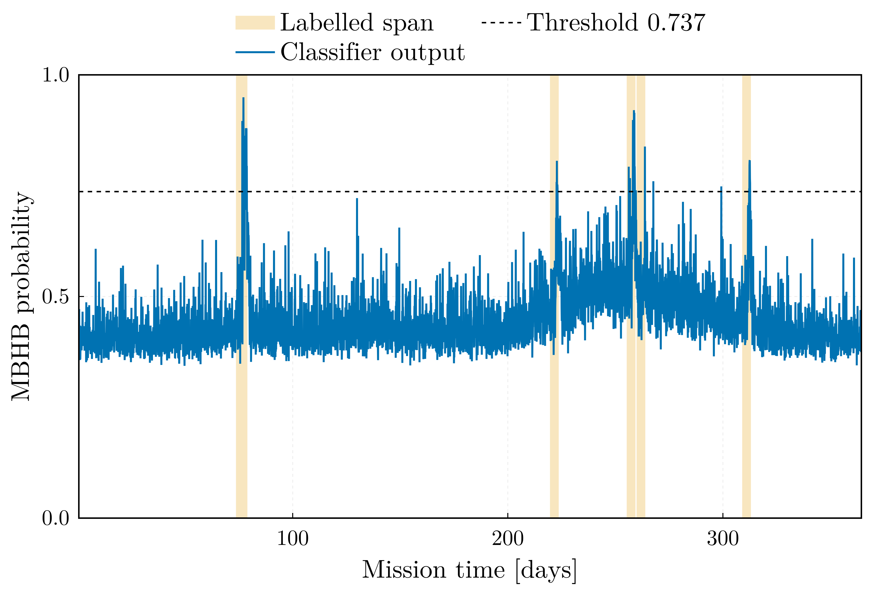
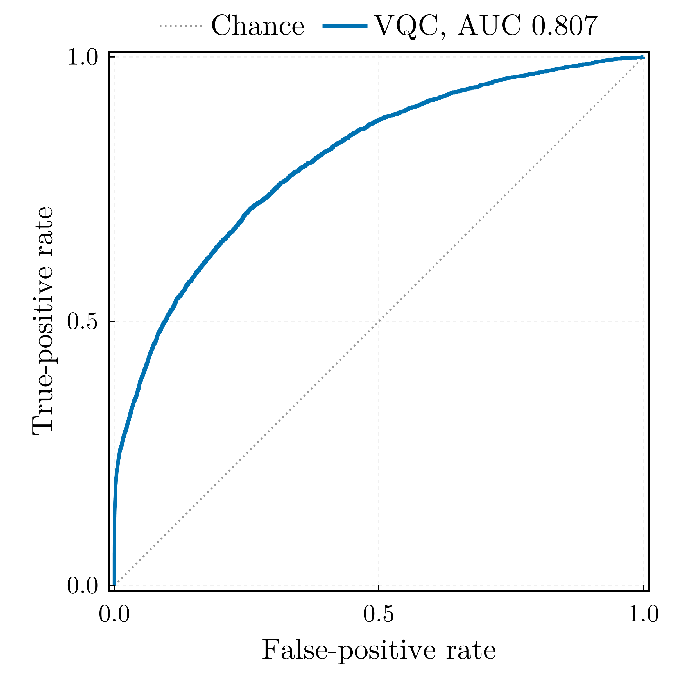
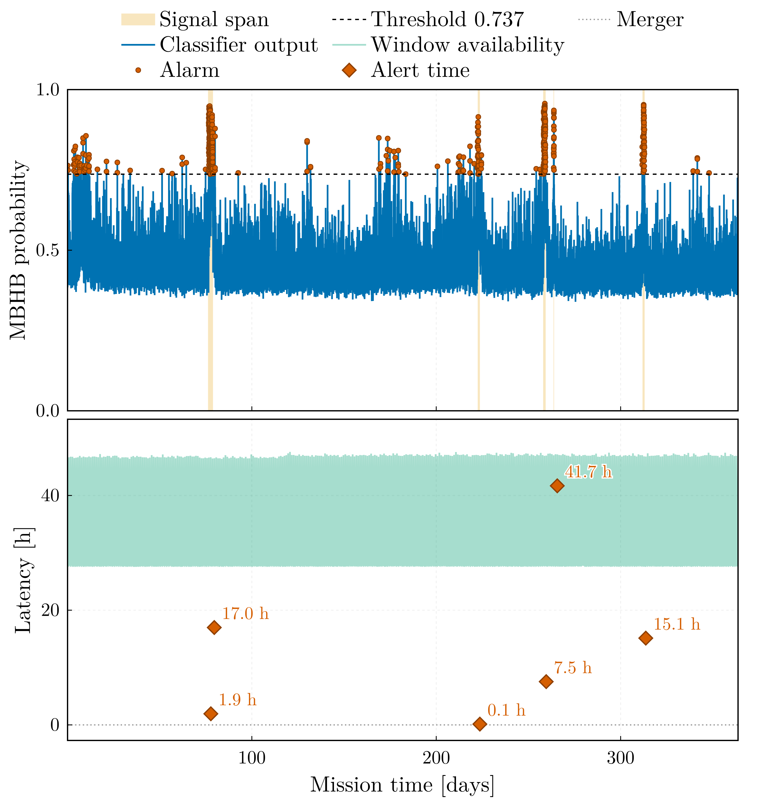
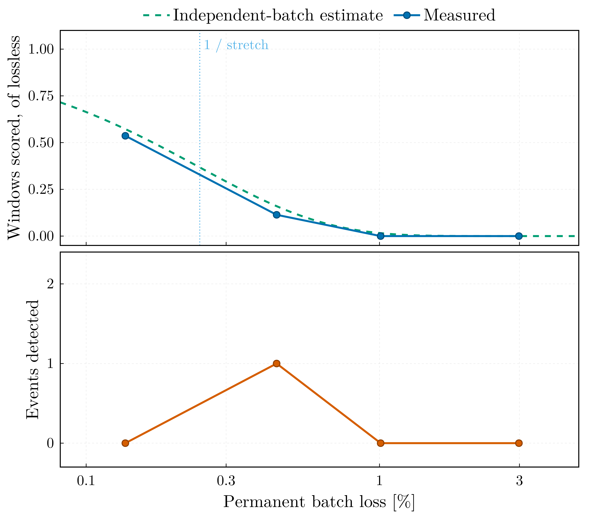

Sangria Benchmark
This page reports what the classifier does on the LISA Data Challenge 2a "Sangria" data set: one year of simulated LISA telemetry for training and a second, blind year for evaluation. It reports the results in full, including the respects in which a small classical network does better.
The alert results of this release credited an alert to a coalescence from the start of its four-day label span, and so counted alarm runs in the first days of the span, where the matched-filter SNR of the source in a single window stays below 3, as detections. This manual has been rebuilt with every alert credited only from the signal onset, the first window in which the signal-only truth reaches the labelling SNR of 5, 7 to 35 hours before the merger on the blind year; alarms before the onset count as false alarms. The persistence setting of the release is unchanged, and the completed-record results are not affected. The year-long replay keeps its conclusion (no alert before the merger) and alerts all six coalescences on its own; the lossy-link study loses alerts: at 0.14 % permanent loss neither coalescence is alerted, at 0.45 % one. The current manual gives the reasoning; the package implements the crediting from release 2.0.0.
The principal result is that on the blind year the eight-qubit model detects all five labelled MBHB events at 1.57 false-alarm episodes per 30 mission days (19 episodes over 364 days), from a decision threshold fitted on held-out data of the training year and applied without adjustment. The threshold's own prediction for that rate was 1.38, so the operating point transfers. The model was chosen on the validation block of the training year before the blind year was scored, and it is the same configuration and seed that were selected for the 1.0.0 tag, retrained on the half-period encoding.
Three qualifications apply to the principal result. The configuration was selected by a pre-registered statistic on the training year, so the 1.57 carries no selection on the blind year; but the spread under re-initialisation alone, measured below, runs from 1.57 to 8.74, and every other configuration of the grid falls inside that spread, so the ranking between configurations is not resolved. Every run on this page encodes its features on the half period $[0, \pi]$ of the $R_z$ gate; the merger windows of the high-SNR coalescences, which the full-period encoding folded onto the noise floor, now score above the threshold for four of the six, and still not for the two most saturated (the encoding section). And the blind year is whitened by the full-record PSD, the median Welch estimate of the entire record (here the blind year), available only after the whole record has been received. It is a label-free statistic of the record under evaluation — legitimate for a finished record and non-causal for a streamed one, which is why the telemetry replay below is quoted under causal whitening, with the non-causal replay beside it as an upper reference for the causal replay.
Data and labels
LDC2a Sangria provides two one-year records of TDI $X$, $Y$, $Z$ at 0.2 Hz: a training product with its source catalogue and truth streams, and a blind product whose MBHB catalogue is released separately. Both are read natively (read_tdi, read_catalog) and reduced to the noise-orthogonal A channel, $A = (Z - X)/\sqrt{2}$ (tdi_to_aet).
Labels come from the truth stream rather than from the classifier's own notion of a detection (label_truth_stream). A merger is a peak of the windowed matched-filter SNR against the analytic Sangria TDI PSD, separated from its neighbours by at least a day and reaching SNR 8; a window is labelled positive when it overlaps the fixed span of four days before to 27 minutes after a coalescence. The training year carries 13 such events and the blind year 6 coalescences that merge into 5 labelled runs, two of them falling within a day of each other.
The first and last ten window lengths of each record are dropped (edge_margin), because the circular high-pass and whitening filters ring there; 62,863 windows of 1000 samples at a stride of 100 remain, covering 363.8 days.
Features are the mean whitened power in six bands whose edges rise from 0.3 mHz, together with the spectral entropy and the log power spread — eight numbers, one per qubit (feature_set = "bands"). The whitening PSD is a Welch estimate of the record being processed.
Protocol
The evaluation protocol matters more than usual here, so it is stated in full.
Blocks. Windows overlap by 90 %, so any random split would put copies of the same signal on both sides of it. The training year is cut chronologically into training (70 %), validation (15 %) and test (15 %) blocks separated by one window length (chronological_split). The feature scaler is fitted on the training block alone, early stopping runs on the validation block, and the decision threshold is fitted on validation and test pooled — the held-out block, 109 days (threshold_block = "held_out", the opt-in the Sangria configurations declare; the package default is the validation block). The blind year enters twice: label-free, through the Welch estimate that whitens it, and at evaluation, where every model is scored once.
Threshold. The far criterion places the operating point of an alert trigger: among the candidates whose false-alarm episode rate does not exceed target_far_per_30d (3 per 30 days) and whose alarm duty cycle does not exceed target_fpr (5 %), it takes the lowest of the admissible range that starts at the highest threshold. The scan runs downwards because the episode count is not monotone — as the threshold falls, spurious episodes first multiply and then merge into one permanently raised alarm that is charged as a handful of long episodes, which an upward scan would accept.
Why the pooled block. The fitted rate is a Poisson count of the alarm episodes its block charges, so its relative error is the inverse square root of that count. Across the grid below, a 55-day validation block charges four to ten episodes, which is not enough to place a rate. Pooling validation with test doubles the exposure. It does not leak into the model — the test block is scored once after training and enters neither model selection nor early stopping — but it costs the test block's independence: its operating-point metrics are then in-sample, and the only independent check of the operating point is the blind year. That is why the package default is the validation block alone (threshold_block = "validation") and the pooled block is an opt-in for records that come with a separate blind product, as this one does.
Selection. Which configuration and seed to select was fixed on the training year, by a rule written down before any blind score existed: the false-alarm episode count at the fitted threshold on the validation block, with every event of the block recovered as a constraint; counts within one Poisson standard deviation of each other are ties, broken by the validation ROC area and then by the smaller circuit. The blind year is then scored once per model and every model is reported, whatever its blind rank.
Metrics. An event is a contiguous run of positive labels and counts as detected when any window inside it alarms. A false-alarm episode is a contiguous run of alarmed windows outside every labelled span, and the operational rate is episodes per 30 mission days. Window-level precision, recall and ROC area are reported too, but the event-level pair is the operating point.
Encoding. Every run on this page maps its features onto $[0, \pi]$ before the $R_z$ encoding gate ([training] phase_span = 1.0). The first release used the full period $[0, 2\pi]$: $R_z(2\pi) = -I$ is a global phase, so a feature clamped at the upper scaler bound was encoded exactly as one at the lower bound, and by continuity the response returned to its floor value as a feature approached the bound. At the coalescence itself the band powers exceed the scaler bound by two to three orders of magnitude, and under the full period five of the six blind coalescences scored below the threshold in the six-hour bin holding the merger. Measured with the retrained model, from the persisted model and feature table, in that same bin:
| Event | Merger-window SNR | Features at the upper bound (mean per window) | Peak band power / scaler upper bound | Peak score, $[0, 2\pi]$ model (threshold 0.826) | Peak score, $[0, \pi]$ model (threshold 0.737) |
|---|---|---|---|---|---|
| 1 | 598 | 1.1 | 129 | 0.738 | 0.852 |
| 2 | 690 | 1.1 | 106 | 0.708 | 0.795 |
| 3 | 1312 | 2.7 | 788 | 0.682 | 0.703 |
| 4 | 799 | 1.2 | 158 | 0.764 | 0.849 |
| 5 | 272 | 0.9 | 109 | 0.861 | 0.913 |
| 6 | 723 | 1.2 | 193 | 0.585 | 0.730 |
The half period lifts the merger bin above the threshold for four of the six coalescences. The two that stay below are the two most saturated: event 3, the highest-SNR one, has on average 2.7 of its six band powers clamped at the bound in that bin, and event 6 1.2. A clamped feature is now a state distinct from the floor, but every clamped feature is the same state whatever its magnitude, and a window with several bands clamped at once is a pattern the training year offers few examples of. The scores still peak 12 to 30 hours before the merger (0.91 to 0.95 for every event), where the band powers sit at 0.4 to 0.8 of the bound: the detector remains one of intermediate sub-mHz excess, with a merger response that is now mostly, not entirely, above threshold.
Results
Ten runs, all trained on the same training year with the same protocol, all evaluated once on the blind year with the threshold carried over unchanged. The validation column is the selection statistic; the blind columns were computed after the selection was recorded.
| Run | Qubits × layers, features | Epochs | Threshold | Validation episodes | Blind events | Blind FA / 30 d | Blind AUC |
|---|---|---|---|---|---|---|---|
sangria_pi | 4 × 4, 2 bands | 37 | 0.816 | 9 | 5 / 5 | 2.64 | 0.8101 |
q4_l6_pi | 4 × 6, 2 bands | 37 | 0.844 | 10 | 4 / 5 | 1.98 | 0.8139 |
q6_b4_pi | 6 × 4, 4 bands | 24 | 0.765 | 8 | 5 / 5 | 5.53 | 0.7919 |
q6_b4_noweight_pi | 6 × 4, 4 bands, unweighted loss | 50 | 0.426 | 7 | 5 / 5 | 9.81 | 0.8115 |
q6_b4_w2000_pi | 6 × 4, 4 bands, 2000-sample windows | 36 | 0.618 | 10 | 5 / 5 | 26.39 | 0.8071 |
q8_b6_pi | 8 × 4, 6 bands | 30 | 0.737 | 4 | 5 / 5 | 1.57 | 0.8065 |
q8_b6_pi_s1009 | 8 × 4, 6 bands, seed 1009 | 20 | 0.740 | 10 | 5 / 5 | 2.06 | 0.8110 |
q8_b6_pi_s2027 | 8 × 4, 6 bands, seed 2027 | 36 | 0.643 | 10 | 5 / 5 | 8.74 | 0.8274 |
q8_b6_pi_s3041 | 8 × 4, 6 bands, seed 3041 | 29 | 0.764 | 7 | 5 / 5 | 3.30 | 0.8129 |
q8_b6_l6_pi | 8 × 6, 6 bands | 50 | 0.716 | 9 | 5 / 5 | 4.78 | 0.8268 |
Every run but one recovers all five label spans — under the full-period encoding the two-band four-qubit baseline found three of them, and now finds five at 2.64 per 30 days. Four runs meet the three-per-30-days target on the blind year: q8_b6_pi, its seed 1009, sangria_pi, and q4_l6_pi, which misses an event. The selection rule picked q8_b6_pi with four validation episodes against seven for the runner-up, three apart, outside the tie band of two, and it is also the best operating point on the blind year; that agreement is a result, not a guarantee. The same configuration under the full period delivered 2.47 at a ROC area of 0.793; the retrained one delivers 1.57 at 0.807, with a threshold that moved from 0.826 to 0.737.

The trace of q8_b6_pi over the blind year shows what the protocol is up against. The bulk of the noise score rises between day 200 and day 300 and falls back by day 350 — the Galactic foreground seen through the constellation's rotating antenna pattern — while the five labelled spans (beige) carry the peaks that clear the threshold. The threshold works because it sits above the annual excursion, not because the events have a high SNR in absolute terms.

The blind year's operating characteristic, drawn post hoc: event recall holds at 1 across the whole range up to the fitted threshold, so the operating point is limited by the false-alarm rate alone, and the fit — made on the training year, without sight of this curve — placed it where the rate crosses the target with room to spare.
What the table shows
Order the same runs by ROC area and the ranking inverts. The selected model is ninth of ten by area and first by operating point; the best area, seed 2027 of the same configuration, delivers 8.74 false alarms per 30 days:
| Run | Blind AUC | Fitted threshold | Blind FA / 30 d |
|---|---|---|---|
q8_b6_pi_s2027 | 0.8274 | 0.643 | 8.74 |
q8_b6_l6_pi | 0.8268 | 0.716 | 4.78 |
q4_l6_pi | 0.8139 | 0.844 | 1.98 (4 / 5) |
q8_b6_pi_s3041 | 0.8129 | 0.764 | 3.30 |
q6_b4_noweight_pi | 0.8115 | 0.426 | 9.81 |
q8_b6_pi_s1009 | 0.8110 | 0.740 | 2.06 |
sangria_pi | 0.8101 | 0.816 | 2.64 |
q6_b4_w2000_pi | 0.8071 | 0.618 | 26.39 |
q8_b6_pi | 0.8065 | 0.737 | 1.57 |
q6_b4_pi | 0.7919 | 0.765 | 5.53 |
The reason is a property of the data, not of the classifier. The classifier's noise score is modulated over the year with a period of one year and the same phase in both records: the Galaxy sits at a fixed sky position, LISA's response to it is modulated by the constellation's rotation, and a single year-median Welch estimate whitens the record correctly only on average. The two years' noise distributions therefore agree only in the tail. Measuring the ratio of blind to training-year noise-window exceedance at a given score, for the two runs whose training-year scores were also computed:
| Model | 0.55 | 0.60 | 0.65 | 0.70 | 0.75 | 0.80 | 0.85 |
|---|---|---|---|---|---|---|---|
sangria_pi (threshold 0.816) | 1.60 | 1.90 | 2.02 | 1.74 | 1.10 | 0.70 | 0.54 |
q8_b6_pi (threshold 0.737) | 1.51 | 1.36 | 1.11 | 0.93 | 0.98 | 1.06 | — |
(—: the blind year has no noise window that high.)
Below about 0.65 the blind year produces one and a half to two times as many noise exceedances as the training year; the selected model's threshold sits at 0.737, where the ratio is within a few per cent of one, and its fitted rate transfers (1.38 predicted, 1.57 delivered). The two-band baseline's tail crosses unity only above 0.75 and its threshold lands at 0.816, in the region where the blind year produces fewer noise exceedances than the training year, which is why it transfers as well. A model whose threshold falls in the shoulder delivers roughly the factor by which the years disagree there. The ROC area is a rank statistic over the whole distribution and is blind to where the tail ends, which is why it favours the runs with the worst operating points.
Six sub-mHz bands help twice over: they compress the annual excursion of the noise tail and they lift the event peaks above it, so the threshold can sit in the stable region. The mechanism is that a contrast between two band powers that are modulated together is invariant to the modulation, and a single wide band offers no contrast to form. Whether the ordering of the configurations generalises past this data set is not something one record and single-seed runs can establish — the seed spread of the selected configuration on the selection statistic, four to ten episodes, covers every other configuration's single seed. What does follow is the check itself: an operating point measured on one observation record means nothing on the next unless it sits where the two records' noise tails agree, and no amount of ROC area substitutes for verifying that.
Against the published method
Everything above uses whitened sub-mHz band powers, which the paper this pipeline follows does not: Isfan et al. take the spectral entropy and the mean, standard deviation and maximum of the raw window periodogram, with no filtering and no whitening, on a four-qubit register. That configuration is included as configs/sangria_paper.toml and was retrained on the same two years and the same encoding (sangria_paper_pi), so the published result can be compared against a reproduction of its own method rather than only against a different one.
Isfan et al. report five of six blind mergers, the missed one being the lowest-SNR source. The retrained parity run reaches all five label spans, one of them by a margin of 0.002 in score — and that span holds event 3, the highest-SNR merger of the blind year, at a merger-window SNR of 1312 against 272 for the lowest-SNR one:
| Span | Events 1+2 | Event 3 | Event 4 | Event 5 | Event 6 |
|---|---|---|---|---|---|
| Peak score, paper features | 0.626 | 0.559 | 0.652 | 0.595 | 0.729 |
| Peak score, band features | 0.949 | 0.930 | 0.944 | 0.913 | 0.923 |
| Threshold | 0.557 / 0.737 |
Under the paper's features the highest-SNR event peaks at 0.559 against a fitted threshold of 0.557: the raw periodogram moments saturate hardest where the signal is strongest, and without whitening the feature scaler clamps them. Under band features the same event peaks at 0.930 against a threshold of 0.737. (Under the full-period encoding the parity run missed the lowest-SNR event instead, which is where the paper's own miss lies; the encoding moved the marginal case from the low-SNR end to the high-SNR end.)
What the reproduction adds is the cost the paper does not report. It publishes no false-alarm rate, so "five of six" has no operating point attached to it. Fitted here by the same criterion as every other run in this document, the paper's feature set delivers 31.7 false-alarm episodes per 30 days — 385 episodes over the blind year, an alarm almost every day — against 1.57 for q8_b6_pi. Its calibration also fails to transfer: the fit predicted 1.38 per 30 days and the blind year returned 31.7, a factor of 23, on a held-out block whose AUC is 0.561, barely above chance.
| Paper features, 4 × 4 | Band features, 8 × 4 (q8_b6_pi) | |
|---|---|---|
| Trainable parameters | 32 | 64 |
| Events | 5 / 5 spans (one at a margin of 0.002) | 5 / 5 |
| False alarms / 30 d | 31.7 | 1.57 |
| Blind AUC | 0.666 | 0.807 |
| Held-out AUC | 0.561 | 0.702 |
So the conclusion is not that the quantum classifier was improved: the register and the ansatz are doing what they did before. The operating point is a consequence of the conditioning. Whitening the record and partitioning the milliHertz decade into six bands cuts the false-alarm rate by a factor of twenty and takes the highest-SNR event from the edge of the threshold to well above it, at twice the parameter budget the paper reports for its own circuit.
Against a classical baseline
A classical multilayer perceptron trained on the same challenge data, whose blind-year predictions I could score, detects all five blind label spans — all six coalescences — with no false-alarm episode at all, alarming on 698 of 6,307,190 samples (0.011 %) at a threshold of 0.5. It is a stronger result than this classifier achieves.
It is quoted, not reproduced. The numbers above come from scoring the predictions released with the model through this project's event protocol; the model was never retrained here. Reproducing it is out of proportion to what it would settle: the preprocessing is a rolling Welch spectral entropy at unit stride (its preprocessing script, window 1000), which is 6.3 million transforms per channel-year and ten of them, and the spectral-entropy series for X, Y and Z are not among the released files.
What the released artefacts do establish, by inspection:
- The model.
Flatten → Dense(128, relu) → Dense(128, relu) → Dropout(0.2) → Dense(1, sigmoid)over a 10 × 10 input — ten timesteps of ten features — is 29,569 parameters, against a few dozen for the variational circuit. That is the relevant comparison; the quantum model does not achieve the better detection result. - The inputs. Ten features: the raw projections X, Y, Z, A, E and the spectral entropy of each. Since
A = (Z − X)/√2andE = (X − 2Y + Z)/√6are computed from X, Y and Z in that same script, the five projections span a three-dimensional space: the input is redundant by construction rather than wrong. The null channelT = (X + Y + Z)/√3, the standard instrumental-artefact monitor, is written as a comment and never used. - The scaling is not blind. Its prediction script fits a fresh
StandardScaleron the blind set rather than reusing the one fitted in training. It touches no labels and acts on the five raw projections only, but it is not cosmetic: between the two years the per-column means differ by 0.27 to 0.65 training standard deviations and the standard deviations themselves by up to 12 %.
That last point has to be weighed symmetrically. The operating-point result above says the two observation years differ enough that a threshold carried between them lands in a shoulder where their noise distributions disagree twofold — that year-to-year shift is the principal difficulty of this problem. Refitting the scaler on the blind year absorbs part of that shift, and so does the whitening of the variational classifier: its band powers are normalised by the blind year's own Welch estimate, band by band, which is likewise a label-free statistic of the record under evaluation, and whitening it with the training year's estimate instead detects nothing (see the telemetry section). Both classifiers are therefore evaluated on a record renormalised towards the one they trained on, by different means; the feature scaler of the variational classifier, fitted on the training year, is the one statistic carried across unchanged. How much of the zero false-alarm rate the refit accounts for cannot be settled from the released files; it is a reason to read the comparison as indicative rather than decided.
The VQC carries 8 qubits and 4 re-uploading layers, 64 parameters against the perceptron's 29,569 — a ratio of 460 — on one projection against five and eight features against ten.

The window-level ROC of q8_b6_pi on the blind year is shown for completeness and should be read with the warning above: at 0.807 it is the ninth best of the ten runs and the one that transfers. The operating point lives at a false-positive rate of a few $10^{-4}$, in the corner of this plot where the curve carries almost no resolution — which is precisely why the area under it is the wrong summary.
Telemetry replay and alert latency
The benchmark above scores a finished record. The package also couples to a telemetry producer (see Telemetry Coupling), replaying a year-long mission with a realistic downlink: daily ground-station passes, 1 % packet loss with retransmission, and an on-board recorder. Windows are scored as their data arrives and alerts are timed against the true coalescences.
Two findings from that exercise bound what this pipeline can contribute to a low-latency alert chain, and both are properties of the conditioning rather than of the classifier:
The whitening is zero-phase, so it is not causal. A window's conditioned features depend on the data after it as much as on the data before it. A detector that scores each window the moment its own samples land finds two of the five blind events; sixty-four window lengths of past context do not repair it. What restores the batch result is centring the window in the stretch that is whitened around it — twenty window lengths on each side reproduce the batch scores at a rank correlation of 0.997, while thirty-two before and twenty after manage 0.860. An alert therefore carries a conditioning lag of twenty window lengths, 1.16 days at these settings, before any ground-segment latency.
The whitening PSD calibrates a record, not a model. Whitening the blind year with the PSD persisted from the training year costs every detection — nought of five, at any context length — because the annually modulated foreground makes the two records' noise genuinely different. A streamed mission therefore has to estimate the PSD of the record it is scoring from the part of it that has reached the ground. The replay quoted here does so (psd_mode = "trailing", the setting of configs/sangria.toml): each window is whitened by the Welch median of the last 30 days of delivered record behind its conditioning stretch, redone once a day, and by the training year's PSD until one 65,536-sample segment is on the ground (the first 446 windows). The estimate the batch benchmark uses instead — psd_sidecar, the year-median Welch spectrum of the whole blind year — is non-causal for a streamed mission: at the first event, on day 78, it contains nine months of data not yet delivered. The same mission was replayed under it as well, and that replay is reported beside the causal one as an upper reference for the causal replay, the result a detector would reach if it knew the year's noise in advance.
With both settled, a full year of the blind record was replayed through a simulated mission: 63,043 batches of 500 s, a 12-hour daily pass, 1 % packet loss with retransmission, no permanent gaps. Under causal whitening the consumer scored 62,834 windows and alarmed 629 of them; under the full-record PSD, 572. The retrained model alarms about three times as many windows as the full-period one did, in longer runs: the same inspiral excess that lifts the merger bins keeps the score above the threshold for hours around each coalescence.

What counts as an alert has to be stated, because it decides the latencies. An alarm is credited to a coalescence only where its signal can be seen: from the signal onset, the first 1000-sample window in which the matched-filter SNR of the signal-only A channel against the analytic Sangria PSD reaches 5, to the end of the label span. The onsets lie 34.8, 29.1, 27.8, 32.2, 7.4 and 27.4 hours before the six mergers (event 2's sought past the span of event 1, whose signal dominates until its merger 29.5 hours earlier); up to 40 hours before its merger the window SNR of every source stays below 3. Alarm runs earlier in the label span count as false alarms. Assigning to each event the earliest alarmed window of its credited span, whatever came after it, the causal replay alarms every coalescence after its merger, at 7.18 false-alarm episodes per 30 days; credited over the whole label span, as first published, it had alarmed four coalescences 1.1 to 1.9 days before their merger, on single windows where the window SNR of the source is below 3. An isolated alarmed window is indistinguishable from the false-alarm population and impossible to act on. The alert protocol therefore requires persistence: an alert is raised by the arrival that completes alert_persistence consecutive alarmed windows, and shorter runs are neither alerts nor charged as false alarms.
The value is fixed on the training year, not on this replay, by a rule written down with the selection: the smallest persistence that brings the calibration block under one false alert per 30 days — the rate below which the LIGO–Virgo–KAGRA public alerts count as significant (Chaudhary et al. 2024), taken as the standard because the Definition Study sets none for its low-latency alert pipelines — that keeps every calibration event alerted with a window of margin, and whose wait stays inside half of the Definition Study's one-hour processing budget. On the calibration block of the retrained model (validation and test, 109 days) the classifier charges five alarm episodes of one to seven windows, 1.38 per 30 days, and alarms its four events for 3, 7, 13 and 46 consecutive windows. Two consecutive windows is the value that satisfies all three conditions: it brings the block to 0.83 per 30 days, and three would leave the shortest event run without margin. The first release, whose model alarmed its calibration events for at least four windows, used three. Credited from the signal onsets of the training year, the same block counts 1.38 false alerts per 30 days at two and 0.83 at three, so two does not meet the standard; release 2.0.0 drops the margin criterion and uses three. Both replays, read at the persistence of this release and at the first alarmed window, credited from the signal onset:
| Event | Merger (mission time) | Signal onset [h] | Causal PSD, two consecutive: alert − merger [h] | Causal PSD, first alarmed window | Full-record PSD, two consecutive | Full-record PSD, first alarmed window | Alert of its own |
|---|---|---|---|---|---|---|---|
| 1 | 2035-03-19T16:27 | −34.8 | +1.9 | +1.8 | +1.9 | +1.8 | yes |
| 2 | 2035-03-20T21:59 | −29.1 | +17.0 | +17.0 | +17.0 | +17.0 | yes |
| 3 | 2035-08-12T15:40 | −27.8 | +0.1 | +0.1 | +0.4 | +0.3 | yes |
| 4 | 2035-09-17T07:48 | −32.2 | +7.5 | +7.5 | +7.5 | +7.5 | yes |
| 5 | 2035-09-21T21:39 | −7.4 | +41.7 | +41.7 | +41.7 | +41.7 | yes |
| 6 | 2035-11-10T00:11 | −27.4 | +15.1 | +15.1 | +15.1 | +15.1 | yes |
| False alarms / 30 d | 1.57 | 7.18 | 1.90 | 2.48 |
The alert time is the arrival at the ground station of the batch that completes the alert, so it contains the conditioning lag of 1.16 days and the downlink delay, together the availability latency of the lower panel; the latencies exclude the one-hour processing budget, which latency_total_h of the table adds. Under the persistence criterion and causal whitening every coalescence is alerted on its own, each after its merger, 0.1 to 42 hours later: a window becomes available for scoring only once the 1.16 days of data after it have been delivered, so even a window at the signal onset is scored at the earliest around the merger. Event 2, whose label span holds the alarms of event 1 before its onset, is alerted on its own 17 hours after its merger; as first published it had no alert of its own, and the replay detected five coalescences on their own rather than six.
The full-record PSD alerts the same coalescences to within half an hour, at 1.90 false-alarm episodes per 30 days. Credited over the label spans it had alerted events 4 and 5 64 and 51 hours before their mergers, on runs of two windows where the window SNR of the source is below 2; those were noise alarms, as the first release already judged them (Poisson $p \approx 0.2$ against the chance expectation).

The alarm tails after each merger and the record-edge transients have one cause: the conditioning kernel of the record high-pass followed by whitening decays as a power law rather than exponentially, because the Welch estimate resolves sharp spectral features such as the TDI transfer nulls. Its envelope is still 7 % of the peak eight window lengths from the impulse and 99.9 % of its energy needs thirty-two. The same kernel produces the record-edge transients that force edge_margin and the post-merger alarm tails that account for most of the charged false alarms at the operating point. Smoothing the PSD would shorten it and is the natural next step.
The spread under re-initialisation
The selected configuration was trained at three further seeds inside the same grid, each refitting its own threshold on the pooled held-out block and applying it to the blind year without adjustment:
| Seed | Fitted threshold | Fit predicted | Delivered FA / 30 d | Events | AUC |
|---|---|---|---|---|---|
| 1009 | 0.7398 | 2.750 | 2.062 | 5 of 5 | 0.8110 |
| 2027 | 0.6432 | 2.750 | 8.741 | 5 of 5 | 0.8274 |
| 3041 | 0.7637 | 2.475 | 3.299 | 5 of 5 | 0.8129 |
| 9999 (selected) | 0.7366 | 1.375 | 1.567 | 5 of 5 | 0.8065 |

Every realisation recovers all five events; two of the four land under the three per 30 days the criterion asked for. What moves is the false-alarm rate, by a factor of five and a half across 1.57 to 8.74, while the ROC area moves by two and a half per cent — and in the opposite direction: the seed with the highest area has the worst operating point. The outlier is the seed whose threshold fitted lowest, 0.643, in the shoulder where the two years' noise tails disagree. That is the same lesson the model grid taught, now measured within one configuration rather than across several: the area under the curve is nearly blind to what the operating point delivers, because the threshold sits in the tail and the area is dominated by the bulk.
So the principal result should be read as an event recall that is stable and a false-alarm rate that carries a factor-of-several uncertainty from initialisation alone — on top of the Poisson uncertainty of the episodes themselves. The selected seed was chosen on the training year, where it is also the best of the four (four validation episodes against seven and ten); that the ranking held on the blind year is a single observation. Four realisations do not measure a distribution; they bound the scatter well enough to say that a threshold fitted in the shoulder does not transfer, whichever seed produced it.
What a lossy link costs
The mission above delivered everything, so the hole handling was never put under load. Five 30-day missions answer what it costs when the link does not: the same payload window — days 65 to 95 of the blind year, which carries coalescences 1 and 2 — and the same pass schedule, with a channel that drops a fraction of transfers for good rather than retransmitting them.
| Permanent batch loss | Batches lost | Windows scored | Alarmed windows | Events |
|---|---|---|---|---|
| none | 0 of 5155 | 4946 | 307 | 2 of 2 |
| 0.14 % | 7 | 2653 | 113 | 0 of 2 |
| 0.45 % | 23 | 563 | 14 | 1 of 2 |
| 1.01 % | 52 | 0 | 0 | 0 of 2 |
| 2.99 % | 154 | 0 | 0 | 0 of 2 |

The collapse is not proportional to the loss, and it is not a defect of the hole handling. A window is scored only once its entire conditioning stretch has reached the ground: context_windows = 20 window lengths on each side of a 1000-sample window, and one batch carries one window step of 100 samples, so 410 consecutive batches must survive. Under an independent per-batch loss p a given window therefore survives with probability (1 - p)^410, drawn as the dashed curve.
The measured survival tracks that estimate while losses are sparse and falls below it as they are not, because the expectation stops being the right summary: surviving windows exist only inside a clean run of 410 batches, the mean spacing of losses is 1/p batches, and once p exceeds 1/410 ≈ 0.24 % such a run is a rare event rather than a typical one. That one number explains the whole sweep of scored windows. Whether a coalescence is still alerted depends on where the holes fall: at 0.14 % the replay scores half the windows and alerts neither coalescence, and at half a per cent it scores a tenth of them and alerts one, 1.2 hours before its merger. As first published, credited over the label spans, both were counted at both rates: at 0.14 % on alarms that precede the signal onsets, at 0.45 % event 2 on the alert of event 1. At one per cent it scores none. A link losing one per cent of its batches permanently delivers a detector that sees nothing, while the same link losing them temporarily — retransmitted, as in the year-long mission, where 648 retries cost nothing — is harmless.
Two consequences follow. The operating requirement is on permanent loss, and it is strict: a fifth of a per cent for scoring most of the record, and less for an alert, since at 0.14 % neither coalescence of this pair is alerted. And the smoothed whitening PSD deferred to v1.2, which would shorten the conditioning kernel, is not a refinement of this result but the precondition for running on a link that loses anything at all; every reduction of the stretch raises the tolerable loss rate in proportion.
Caveats
- One blind realisation of five events. The event recall is 5 of 5 and the false-alarm rate is measured over 364 days, but five events do not measure a detection efficiency. Treat the recall as a result, not a rate.
- One initialisation per configuration, four for the selected one. The grid runs at
seed = 9999; the selected configuration was repeated at three further seeds, whose blind rates span 1.57 to 8.74 per 30 days. Every other configuration's single seed lies inside the seed spread of the selected one on the selection statistic, so the configuration ranking is not established. - Single channel. Only A is used; E and T carry independent information and would also permit a null-channel veto.
- No gaps in the principal result. The Sangria products are gapless, and the mission replayed above delivered all 63,043 batches: nothing was lost or pruned, so every number in the table before it describes a lossless link. What a lossy one costs is measured separately, above, on 30-day missions; the classifier itself has never been trained on data with gaps.
- The threshold is fitted on the same mission's earlier year. A real chain would recalibrate as the mission proceeds; the transfer measured here is over one year, in one direction.
- The encoding is mitigated, not solved. On $[0, \pi]$ four of the six coalescences clear the threshold in their merger bin; the two most saturated do not, and every alert still rests on the inspiral excess of the hours before the merger.
- The non-causal replay is an upper reference for the causal replay. The year-median Welch estimate of the blind year whitens every window of the comparison replay, including at the first event the nine months not yet delivered; the latencies quoted are those of the causal replay, which a mission could run.
- Alerts are credited from the signal onset. Credited so, all six coalescences are alerted on their own in the year-long replay, each after its merger; credited over the label spans, as first published, event 2 was only ever alarmed by event 1's windows.
Reproducing
With $LDC pointing at the directory holding the Sangria HDF5 products and $UNBLINDED at the CSV of the blind year's signal-only TDI (columns t, X, Y, Z, released with the unblinded MBHB catalogue):
# Labels for both years
julia scripts/label_ldc.jl configs/sangria.toml --h5-file $LDC/LDC2_sangria_training_v2.h5
julia scripts/label_ldc.jl configs/sangria.toml --truth-csv $UNBLINDED --output-prefix sangria_blind_points
# Band features for both years
julia scripts/preprocess_ldc.jl configs/experiments/q8_b6.toml \
--h5-file $LDC/LDC2_sangria_training_v2.h5 --label-file data/inputs/sangria_labels.csv
julia scripts/preprocess_ldc.jl configs/experiments/q8_b6.toml \
--h5-file $LDC/LDC2_sangria_blind_v2.h5 \
--label-file data/inputs/sangria_blind_points_labels.csv \
--output-prefix sangria_b6_blind
# Train and evaluate the selected run; the seeds add --seed 1009 | 2027 | 3041
julia scripts/train.jl configs/experiments/q8_b6.toml --run-id q8_b6_pi
julia scripts/infer.jl configs/experiments/q8_b6.toml --run-id q8_b6_pi
# Replay a producer mission of the blind year: causal as configured,
# full-record PSD with psd_mode = "sidecar" in [telemetry]
julia scripts/infer_telemetry.jl configs/sangria.toml --run-dir <DeepSpaceTelemetry run> \
--model models/run_q8_b6_pi/gw_model.jld2 \
--events data/inputs/sangria_blind_points_events.csv --run-id telemetry_year_piTraining runs to early stopping in 20 to 50 epochs at roughly a minute and a half each on 16 threads; inference over the blind year takes a minute. The other configurations are in configs/experiments/ and configs/sangria.toml; every run on this page was trained with the committed phase_span = 1.0. The batch gradient is chunked at a fixed size and reduced in chunk order, so the thread count does not enter the result: runs of the same seed at 8 and 16 threads reproduced each other bit for bit.